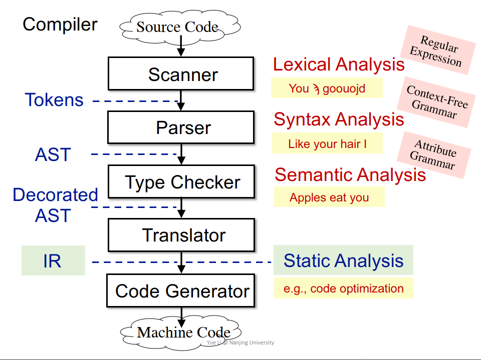

静态分析：抽象 + 过近似(Over-approximate)
sound: Over-approximate 将所有可能的程序行为均包括（大于）。
complete: Under-approximate 所有包含的程序行为都是程序运行的。
false negatives: 漏报
false positives: 误报
源码->（Scanner - 词法Lexical分析-Regular Expression）->（Parser- 语法Syntax分析-Context-Free Grammar）， 生成AST ->（Type Checker - 语义Semantic分析 - Attribute Grammar），生成 Decorated AST -> Translator，生成IR，进行静态分析 -> Code Generator 
AST: 高级，更接近于语法结构，依赖于语言种类，适用于快速类型检查，缺少控制流信息
IR: 低级，更接近于机器码，不依赖语言种类，压缩且简洁，包含控制流信息。是静态分析的基础
a+b+3 -> t1 = a + b
t2 = t1 + 3定义：给每一个定义变量一个新的名字，传递到接下来的使用当中，每个变量有1个定义（赋值的目标变量）。
优点：唯一的变量名可以间接体现程序流信息，简化分析过程；清楚的Define-Use信息。
缺点：引入很多变量和phi-function；转换为机器码时效率变低（引入很多拷贝操作）。
定义：只有1个开头入口和1个结尾出口的最长3-地址指令序列。
建立方法: 1. 第一条指令是入口; 2. 任何跳转指令的目标地址是入口； 3. 任何跟在跳转指令之后的指令是入口。 4. 然后构造基本块，任何基本块包含1个入口指令和其接下来的指令。
建立基本块之后，建立边的方法 建立方法： 1. 基本块A的结尾有跳转指令跳转到基本块B； 2. 原始指令序列中，B紧跟着A，且A的结尾不是无条件跳转。 3. 添加Entry / Exit：没有块跳转到该块 / 没有跳转到其他块。